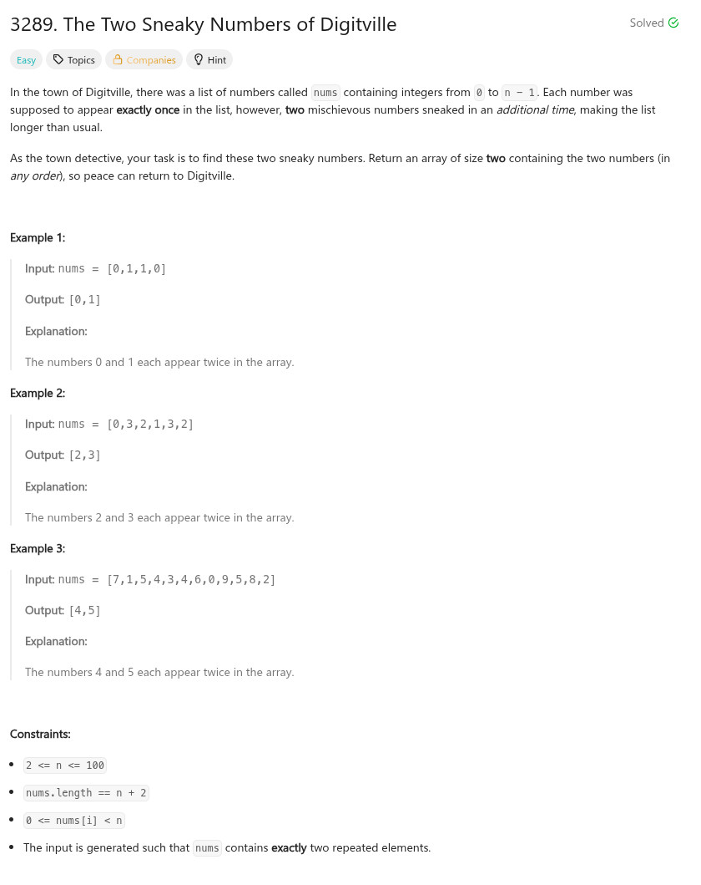

題目：

/**
* Note: The returned array must be malloced, assume caller calls free().
*/
int* getSneakyNumbers(int* nums, int numsSize, int* returnSize)
{
int cc = 0;
int idx = 0;
int *r = NULL;
int cnt[200] = { 0 };
(*returnSize) = 0;
r = calloc(2, sizeof(int));
for (cc = 0; cc < numsSize; cc++) {
int pos = nums[cc];
cnt[pos] += 1;
if (cnt[pos] >= 2) {
(*returnSize) += 1;
r[idx++] = pos;
if (idx >= 2) {
return r;
}
}
}
return r;
}